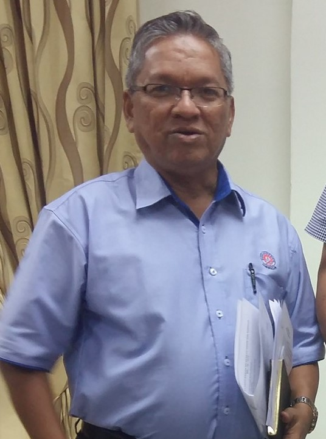

Nurul Balqis
DIPLOMA IN INFORMATION TECHNOLOGY
Mi Historia
So this is the story. Full name is Nurul Balqis binti Abd Rahman. Born in Johor Bahru, Johor; the same hospital as my own mother. Now residing in Yong Peng along with my family. I am blessed with a total of 9 siblings all together. We're chaotic, in a fun way I mean. :))
Succeed graduating from primary school with flying colours, I was offered to study in MRSM Batu Pahat under a special international programme (IGCSE). It's basically O-Levels, but sadly I have nothing to comment much more on it because I didn't pass the qualification which led me to taking SPM during form 5.
Entering high school life was not bad, indeed awesome surrounded with great & sucessful people. I obtained a lots of bitter sweets memories residing at the back of my head. Some of them descended to my heart.
As expected, I am totally involved with sports activities which rewarded myself with lots of medals, trophies and the "olahragawati" title. Bear with me, lots of self praising to come well, this is my website ain't it?
As the highschool season passed by, I am greeted with the norm of life, outside of the MRSM, indeed a different vibe. Upon finishing highschool, I started to work myself; earning experiences and money, learning how the true world works like and all. It was, not bad.
Choosing where to further my study was the toughtest. I had family conflict even conflicted with myself, in the end, here I am; KPTM Batu Pahat. I once applied under Human Resource Management course, but HAHHHAHAHAH I changed. Now taking Diploma in IT and not regretting it at all.
It is such a great course compatible with me and also with great lecturers that have been so helpful along the 3 semesters I'm taking this course. Caution bragging alert; So far I haven't got lower than 3.90 GPA each semester, which is alhamdulillah. It all comes from blood sweat and tears of me and everyone that has been of help. The end.
My Skills
Microsoft Office
Photoshop
Adobe Dreamweaver
My Reputation
Lim Bee Hoon. Ex-Head Master of SK Yong Peng
A Role Model, indeed. Topped both co and curriculum. .

Dr.Hamzan. Headmaster of MRSM Batu Pahat.
Nobody topped her diligence and consistency other than her own self.
My Photos